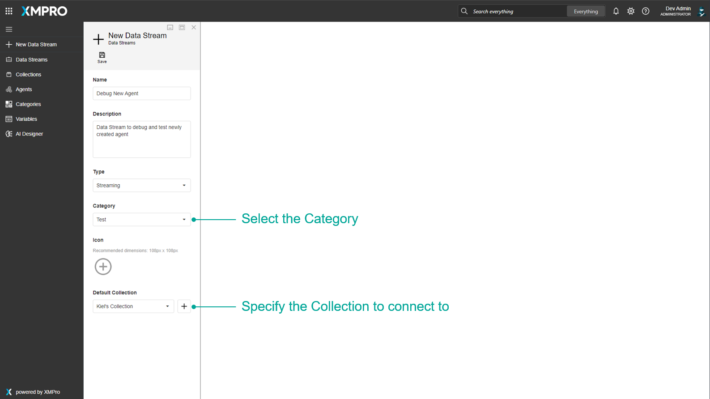
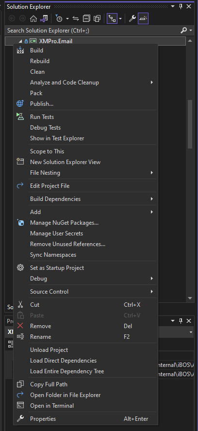
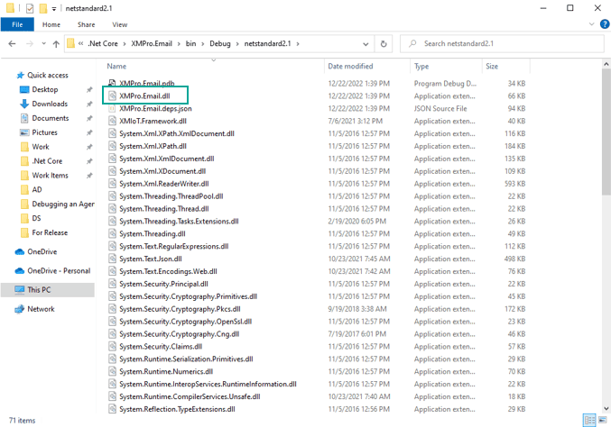
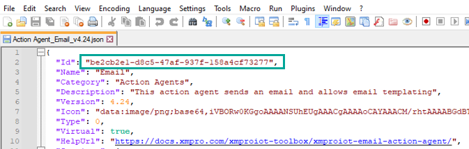
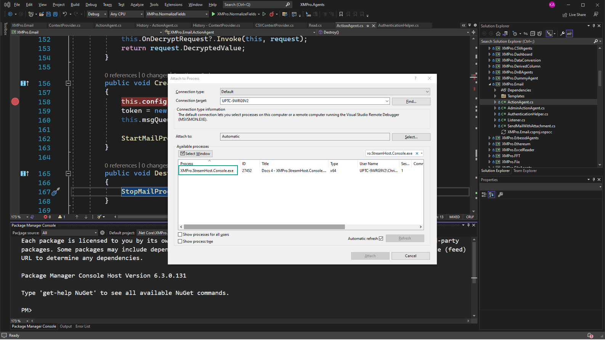
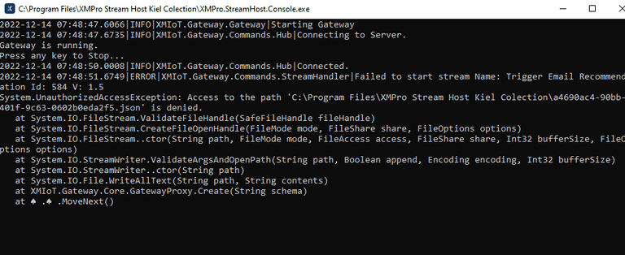

Debugging an Agent
Agents can be traced and debugged once they are added and used in a Data Stream. This is particularly useful when testing if an agent is working as intended and troubleshooting agent issues along the way.
Setup Before Debugging
- Package the agent using this guide. Make sure that the Agent is packaged as non-virtual. If the Agent is required to be virtual, temporarily set it to non-virtual during development and just repackage it to virtual when releasing.
Note
Only non-virtual agents could trigger all breakpoints inside the Agent's code. This will also allow you to access any local environment (database, server, etc.) that you will use for testing.

- Add the Packaged Agent in the Data Stream Designer by following the Adding an Agent article.
- Install the XMPro Stream Host by following the Install a Stream Host article. Within the installation wizard, select Console Application as the Host Type.

- Create a new Data Stream for testing the agent and select the collection profile you used during Installation of Stream Host.

- Add the created Agent in the Data Stream and Save.
- Run the Stream Host as Admin and Publish the Data Stream for the first time. A cache folder will be created inside the Stream Host folder which will be used later on.
Steps to Debug an Agent
- Build the Agent Project to generate a dll. If built using the Debug configuration, the dll usually would be found inside the folder [Project folder]/bin/Debug/netstandard2.1.


- Replace the Agent dll on the Stream Host installation folder under Cache/[Agent Id]/[Agent Version] with the one generated.
- To determine an Agent's id, export a JSON from the XMP file of the agent via Package Manager and determine the value from the
Idproperty.


- Run Stream Host as Admin.
- Run Visual Studio as Admin and open Agent solution.
- Add a breakpoint in the Agent's code.
- Attach
XMPro.StreamHost.Console.exeto process. By default, Visual Studio shortcut isctrl + alt + p.

- Publish the test Data Stream on the Data Stream Designer to initiate debugging.
Common Issues
Issue: 'Access to Path is denied' when publishing a Data Stream

- Make sure that Stream Host is ran in Administrator Mode
Issue: Breakpoint doesn't fire
- Make sure the Agent is packaged as Non-Virtual.
- This can also be an issue with testing out multiple versions of the agent. Ensure that the agent dll is copied to the folder with the correct agent id and version.
- Alternatively, one can refresh the Cache folder by:
- Deleting the Cache folder
- Running Stream Host
- Publishing the Data Stream
- Copying the Agent dll to the appropriate folder
- Potential issue can lie in dll not containing the expected changes. Cleaning and rebuilding the agent may solve this issue.
Issue: 'Sorry, something went wrong.' error when configuring an agent

- Make sure that stream host is running for non-virtual agents.
- If the agent is supposedly virtual, repackage the agent as non-virtual temporarily to be able to access your local environment settings
- Ensure that agent settings are configured in line with the agent's code. Things to note for:
- Ensure that the key when packaging agents match the key used in code (case-sensitive)
- Ensure that all key names are unique for both group and variables.
- For value fields (eg. Token Box, Dropdown), ensure that default/configured values match the expected values in code. Take note that this is also case-sensitive
- Alternatively, adding a breakpoint and debugging in
GetConfigurationTemplatecan help determine the setting/property that is causing the error
Issue: 'Could not complete Integrity check. undefined' when running integrity check
- This can be caused by missing properties within the settings when packaging an agent. Ensure that the expected configurations within the agent's code are properly configured within the settings in package manager.
Last modified: June 17, 2025